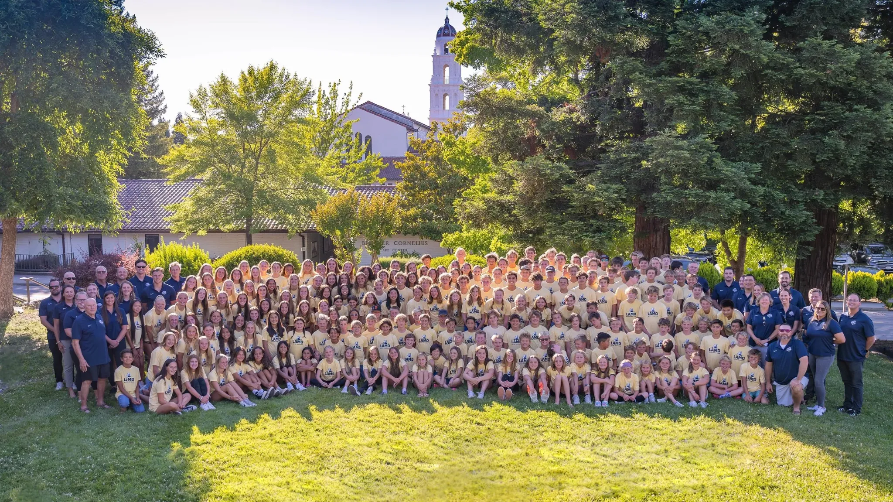

Club signal
Club directory
Explore youth water polo clubs.
Browse clubs by location, ranked-team depth, tournament history, and age-group footprint. Each profile connects teams, results, websites, and program information.
—Clubs tracked
—Ranked teams
—Regions
ProfilesTeams + results + websites

National club directory
Explore clubs by region.
Select a state or regional label to filter the club directory. California remains divided into its nine established WPI regions.
All regionsSelect the map or a region below
Loading map…Regional filters remain available.
Regions